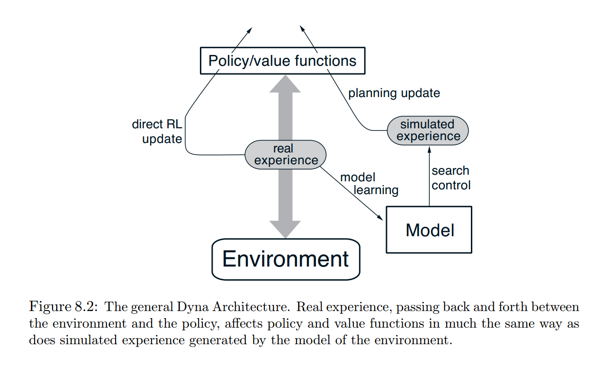

Agents
An agent is a functional object, which takes in an observation and returns an action. Agents must also implement the update!(agent::AbstractAgent, obs_action::Pair) method to indicate how to update the internal state of the agent.
ReinforcementLearning.Agent — Type.Agent(;kwargs...)One of the most commonly used AbstractAgent.
Generally speaking, it does nothing but
- Pass observation to the policy to generate an action
- Update the buffer using the
observation => actionpair - Update the policy with the newly updated buffer
Keywords & Fields
π::AbstractPolicy: the policy to usebuffer::AbstractTurnBuffer: used to store transitions between agent and environmentrole=:DEFAULT: used to distinguish different agents
ReinforcementLearning.DynaAgent — Type.DynaAgent(;kwargs...)DynaAgent is first introduced in: Sutton, Richard S. "Dyna, an integrated architecture for learning, planning, and reacting." ACM Sigart Bulletin 2.4 (1991): 160-163.
Keywords & Fields
π::AbstractPolicy: the policy to usemodel::AbstractEnvironmentModel: describe the environment to interact withbuffer::AbstractTurnBuffer: used to store transitions between agent and environmentrole=:DEFAULT: used to distinguish different agentsplan_step::Int=10: the count of planning steps
The main difference between DynaAgent and Agent is that an environment model is involved. It is best described in the book: Sutton, Richard S., and Andrew G. Barto. Reinforcement learning: An introduction. MIT press, 2018.

